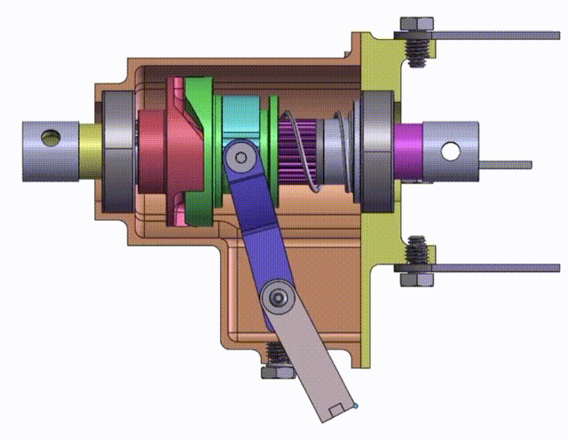
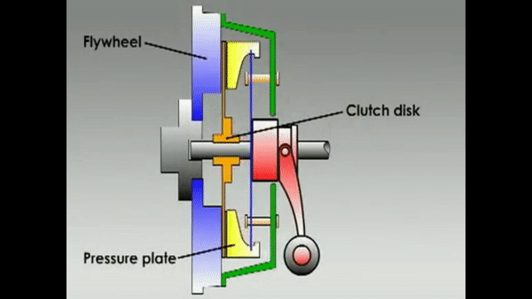
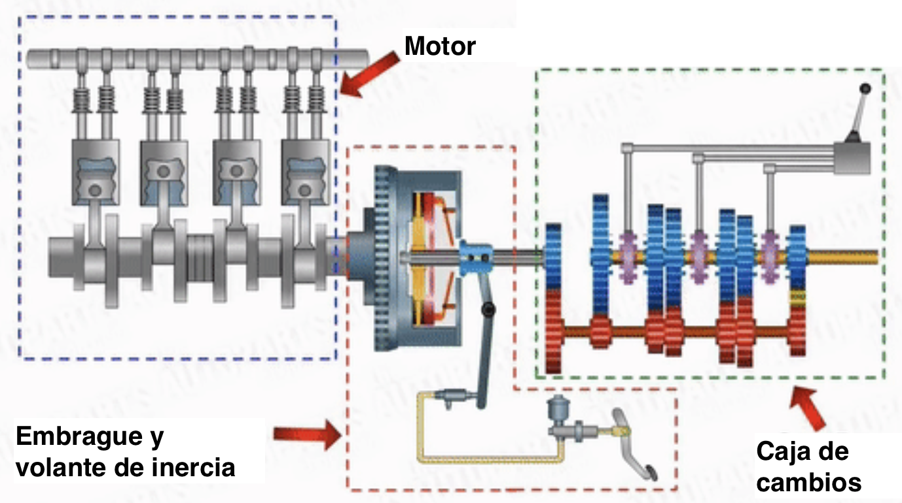

Embragues
En general, los embragues son acoplamientos utilizados para solidarizar dos árboles alineados, para transmitir a uno de ellos el movimiento de rotación del otro, y desacoplarlos a voluntadde un operario externo, cuando se desea modificar el movimiento del conducido sin necesidad de parar el eje motriz.
El embrague debe tener una parte móvil que, al desplazarse, conecte o desconecte los árboles motriz y conducido. Para mover ese elemento se pueden usar diferentes tipos de accionamiento:
- Accionamiento mecánico:es el único que se usaba en un principio. Consiste en transmitir el movimiento del accionador (normalmente un pedal) al elemento móvil del embrague mediante un cable de acero tensado.
- Accionamiento hidráulico: es una evolución consistente en transmitir el movimiento desde el pedal mediante un fluido hidráulico (al igual que en los frenos de los coches). Así se puede transmitir el movimiento mediante una tubería con la forma que queramos y no en línea recta como ocurre con el cable. En los vehículos modernos, donde en el compartimento del motor hay muy poco espacio, esta es una ventaja fundamental.
- Accionamiento eléctrico: lo que se envía es una señal eléctrica a un motor que es el que acciona el elemento móvil del embrague. Normalmente el motor acciona un sistema hidráulico para mover el elemento. Sería como una mejora del accionamiento hidráulico en el que nos ahorramos la tubería de fluido desde el pedal hasta el embrague.
Además de los diferentes tipos de accionamiento, también existen diferentes tipos de embragues, que comentamos a continuación:
De dientes
Están caracterizados porque la conexión entre los árboles conductor y conducido se logra mediante dos miembros dentados que giran solidariamente con cada eje, de manera que los dientes de uno calcen en los huecos del otro.
En la siguiente animación puedes ver cómo encajan los dientes del árbol motor (en rojo) con los del elemento que transmite el movimiento al árbol conducido (en verde):

De fricción
Están constituidos por una parte motriz que transmite el giro a una parte conducida, utilizando para tal efecto la adherencia existente entre dos discos, a los que se les aplica una determinada presión que los une fuertemente uno contra el otro. Está compuesto por dos partes claramente diferenciadas, el disco de embrague (clutch disk en la siguiente animación) y el plato de presión (pressure plate).

Cuando el embrague está sin accionar(motor embragado) el disco tiene un gran rozamiento con el plato y transmite toda la fuerza generada en el motor. Cuando se acciona el embrague (motor desembragado) el diafragma es comprimido por el conductor y el disco queda suelto, siendo incapaz de transmitir la fuerza del motor a la caja de cambios.
Según la posición del pedal del embrague se puede conseguir un acoplamiento total (pedal suelto) o acoplamientos parciales (pedal a medio pisar) que nos permiten variar la fuerza transmitida por el motor a la transmisión. El problema con el acoplamiento parcial es que produce un rozamiento excesivo que provoca un desgaste y calentamiento del embrague, por lo que no debe mantenerse mucho tiempo.
Hidráulicos
El embrague hidráulico sustituye al embrague de fricción en los vehículos equipados con caja de cambios automática. Consta de dos partes giratorias: la bomba, movida por el motor, y la turbina, que transmite el par a la caja de cambios.
Un embrague hidráulico está formado por una rueda de paletas unida rígidamente al extremo posterior del cigüeñal del motor, gira con este y está sumergida en un baño de aceite, produciendo al girar en el líquido un efecto parecido al del rotor de una bomba centrífuga con lo cual transmite la energía de movimiento del motor al aceite, produciendo así el movimiento de éste.
Una segunda rueda de paletas similar a la primera está en frente y paralela. El eje de esta segunda rueda forma parte del árbol primario de la caja de cambio de velocidades; el aceite en movimiento hace girar esta segunda rueda entregándole la energía de movimiento al motor. No existe una unión sólida entre los dos elementos pero se transmite el movimiento.
Al ponerse en marcha el motor, las paletas del rodete impulsor comienzan a mover el aceite que es lanzado contra las paletas del rodete conducido; mientras la velocidad del rodete impulsor sea pequeña, el rodete conducido no es arrastrado por el aceite, pero a medida que aumenta la velocidad del motor el aceite va aumentando su velocidad y su capacidad de arrastrar al rodete conducido, cuando llega a la misma velocidad gira el rodete conducido.
Para entenderlo mejor, os dejo un vídeo donde se explica el funcionamiento con detalle:
Electromagnéticos
Son embragues que basan su funcionamiento en el principio de los efectos de la acción de los campos magnéticos.
Están formados por un elemento conductor fijado al volante de inercia en el que se encuentra polvo metálico, un elemento conducido ensamblado sobre el árbol conducido con una bobina que es alimentada a través de unas escobillas y un calculador electrónico, que recibe información de la posición de la palanca de cambios, del régimen del motor, de la velocidad del vehículo, y de la posición del pedal del acelerador. El embrague es gestionado por corrientes de intensidad variable.
Embragues en los vehículos
Aunque los embragues son de aplicación en multitud de máquinas, una aplicación muy importante por su influencia fuera de la industria es la de los vehículos a motor térmico (coches, camiones, motocicletas, etc)
Los vehículos con motores térmicos necesitan una caja de cambios como ya vimos en el apartado 2 de este tema. Esto permite variar la velocidad de giro de las ruedas sin variar la velocidad de giro del motor. El embrague es el sistema que permite controlar el acoplamiento mecánico entre el motor y la caja de cambios.
El embrague permite que se puedan insertar las diferentes marchas o interrumpir la transmisión entre el motor y las ruedas. Su misión es desconectar el motor de las ruedas en el momento de arrancar o realizar un cambio de marcha, sin que deje de funcionar el motor. En los vehículos con transmisión manual suelen utilizarse embragues de fricción o electromagnéticos, mientras que en los de transmisión automática se usan embragues hidráulicos.
En la siguiente imagen tienes un esquema de cómo el embrague conecta el motor del vehículo con la caja de cambios:

- En posición acoplado ("embragado") transmite la potencia suministrada. La potencia del motor se transmite a la caja de cambios y de allí a las ruedas.
- En posición desacoplado ("desembragado") se interrumpe la transmisión. Las ruedas giran libres o están detenidas, y el motor puede continuar girando sin transmitir su giro a las ruedas.
Para fijar ideas, os dejo un vídeo donde se explica perfectamente el funcionamiento del embrague en un coche. Aunque está en inglés, se pueden activar los subtítulos en español.
Por último, es importante comentar que los vehículos con motor eléctrico no necesitan ningún tipo de embrague, porque los motores eléctricos entregan prácticamente todo el par independientemente de su velocidad de giro. Cuando el vehículo se detiene también lo hace el motor y no hay ningún problema en ponerlo en movimiento con casi todo el par nada más pisar el acelerador. Incluso es posible cambiar su sentido de giro, por lo que no es necesario "meter marcha atrás" para recular el vehículo.
Los motores eléctricos son muy superiores a los térmicos en todos los aspectos tecnológicos. No sólo tienen cero emisiones al funcionar y son muchísimo más eficientes, sino que pueden ser mucho más sencillos mecánicamente. La única razón por la que aún no todos los vehículos son eléctricos es por la tecnología de baterías, que es el verdadero limitante del vehículo eléctrico. La densidad energética de los combustibles fósiles es muy superior, por ahora, a la de las baterías, y la velocidad de recarga de combustible también es mucho mayor que la de recarga de una batería.